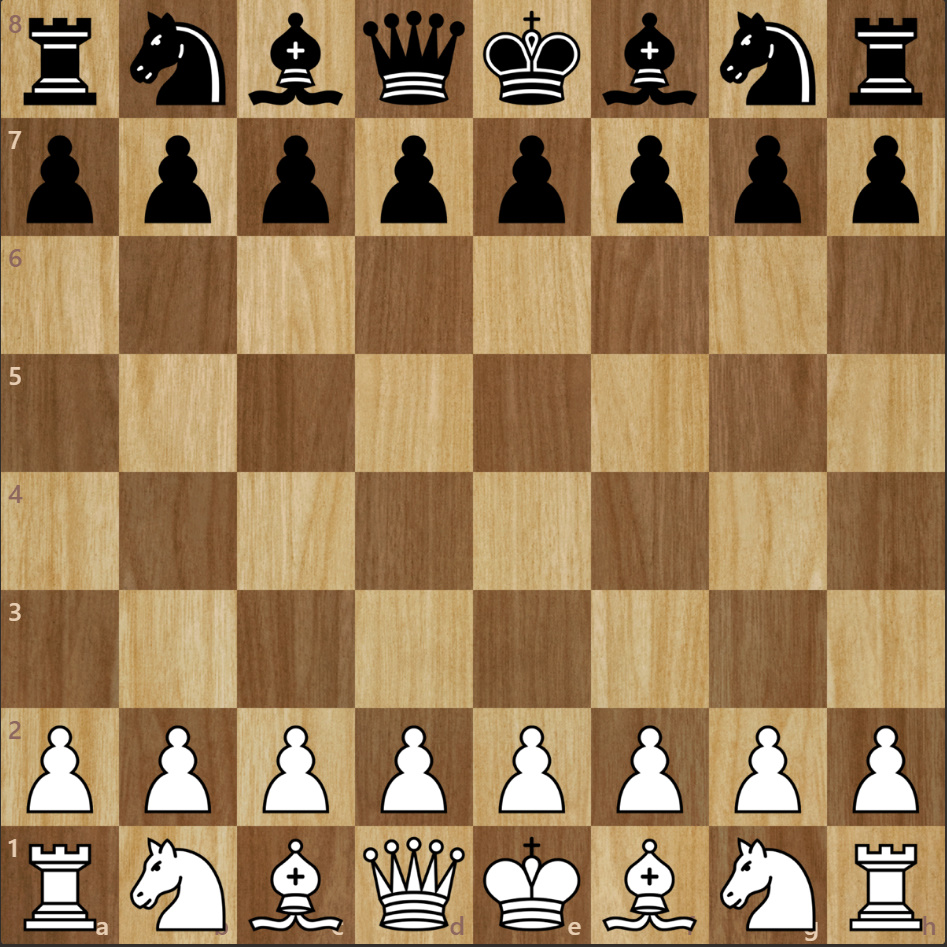

What is chess?
Chess is a two-player board game using a chessboard and sixteen pieces of six types for each player. Each type of piece moves in a distinct way. The object of the game is to checkmate (threaten with inescapable capture) the opponent's king. Games do not necessarily end in checkmate; a player who expects to lose may resign. A game can also end in a draw in several ways.
A Brief History of Chess
The history of chess goes back almost 1500 years. The game originated in northern India in the 6th century AD and spread to Persia. When the Arabs conquered Persia, chess was taken up by the Muslim world and subsequently, through the Moorish conquest of Spain, spread to Southern Europe. But in early Russia, the game came directly from the Khanates (muslim territories) to the south.
In Europe, the moves of the pieces changed in the 15th century. The modern game starts with these changes. In the second half of the 19th century, modern tournament play began. Chess clocks were first used in 1883, and the first world chess championship was held in 1886. The 20th century saw advances in chess theory, and the establishment of the World Chess Federation (FIDE). Chess engines (programs that play chess), and chess data bases became important.